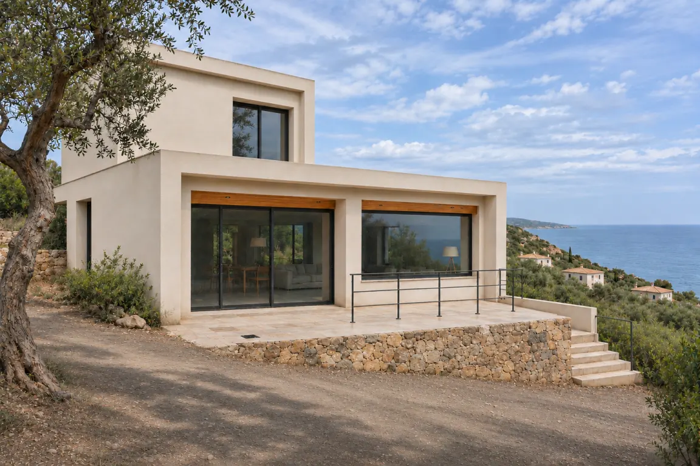
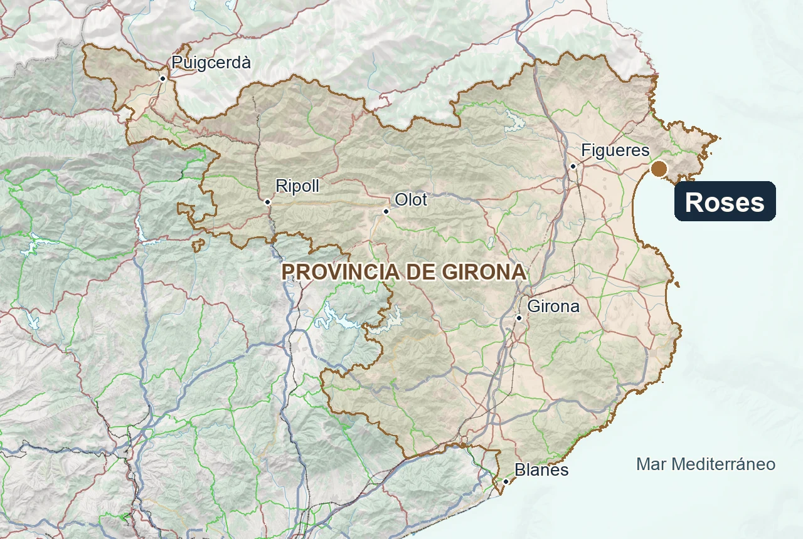

¿Qué quieres reformar?
Elige el tipo de obra y prepara tu consulta a Manolo por WhatsApp.


Cuatro épocas de obra y reforma
Desliza por la página o pulsa «Antes» y «Después» para ver cada transformación.
Recreaciones ilustrativas de obra y reforma.
Recreaciones ilustrativas de obra y reforma.
Años 80
Revoco desprendido y contraventanas desgastadas.


Años 90
Desconchados en la fachada y humedad bajo el balcón.


Años 2000
Porche deteriorado y pavimento exterior dañado.

2026
Villa en obra con trabajos de albañilería en las dos plantas y el mar al fondo.

Ejemplo de obra
Rehabilitación de un porche
8 trabajadores
a cargo de Manolo
Ejemplo de rehabilitación con imágenes ilustrativas.
Pavimento y porche renovados
La foto amplia muestra el acceso, el porche y el pavimento exterior ya terminados.
Lo que no se ve en una reforma
En una fachada con humedad, estos tres puntos ayudan a entender por dónde entra el agua y cómo sale.
Ejemplo ilustrativo de una fachada rehabilitada.
El encuentro con la ventana
Revisamos la junta entre el marco y la pared y el vierteaguas de debajo. Ese remate ayuda a que la lluvia caiga hacia fuera y se separe de la fachada.

Conoce a Manolo
Lleva más de 50 años levantando, reformando y reparando casas en el Empordà. La primera visita es para ver la obra contigo, hablar de qué hace falta y decidir por dónde empezar.
Tratas directamente con él, desde esa primera visita hasta el último repaso.
De la primera visita al último repaso
Hablas directamente con Manolo, que coordina a los 8 trabajadores que tiene a su cargo.
-

Vemos la vivienda
Miramos qué necesita la casa y hablamos de lo que quieres cambiar.
-
Acordamos el trabajo
Concretamos qué hay que hacer y en qué orden.
-
Revisamos los acabados
Repasamos contigo los remates de la obra y resolvemos las últimas dudas.
Escenas ilustrativas.
Cuéntale a Manolo qué necesitasPreguntas antes de empezar
¿Haces trabajos pequeños?
Sí. Cuéntame qué necesitas y dónde está la vivienda.
¿Qué te cuento cuando te llame?
Dime el municipio, qué quieres reformar o reparar y si es urgente. Si tienes fotos, también puedes enviarlas por WhatsApp.
¿Trabajas fuera de Roses?
Trabajo en Roses y el Alt Empordà. Dime dónde está la obra y lo vemos.
Zona de trabajo
Provincia de Girona
Trabajo desde Roses. Dime en qué municipio está la vivienda y te confirmo si puedo desplazarme.
Consultar por mi municipio
Contacto
Hablemos de tu obra.
Cuéntame qué quieres hacer y dónde está la vivienda.